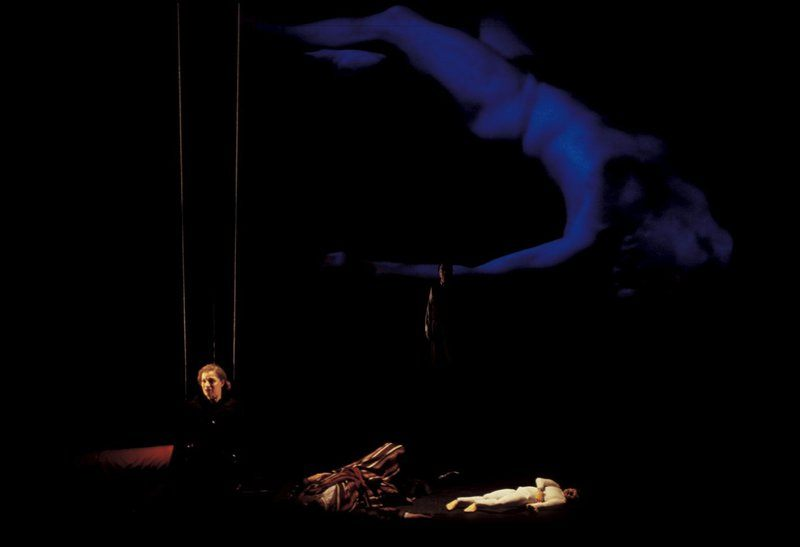
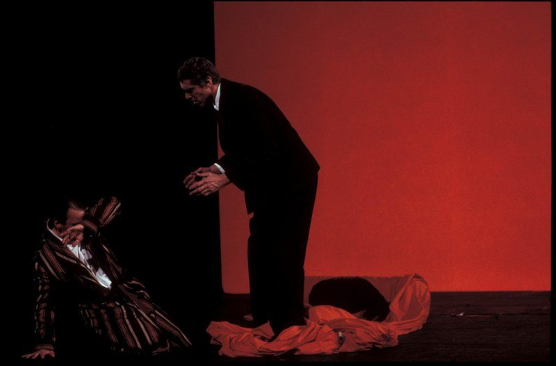
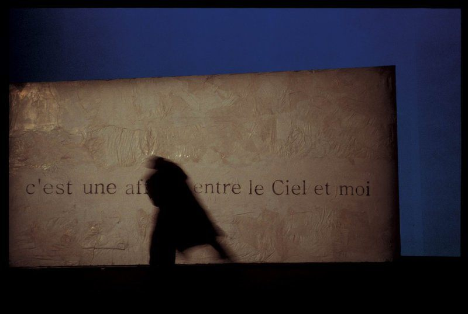
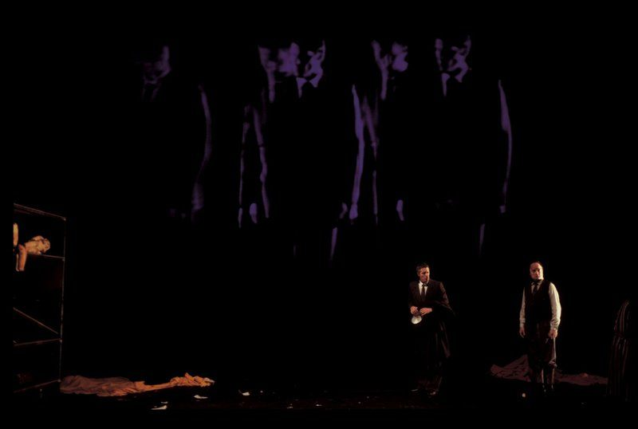
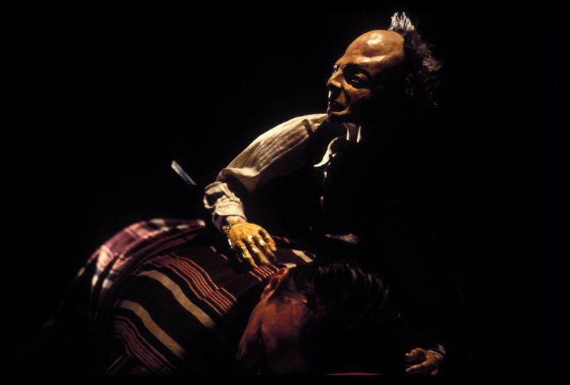
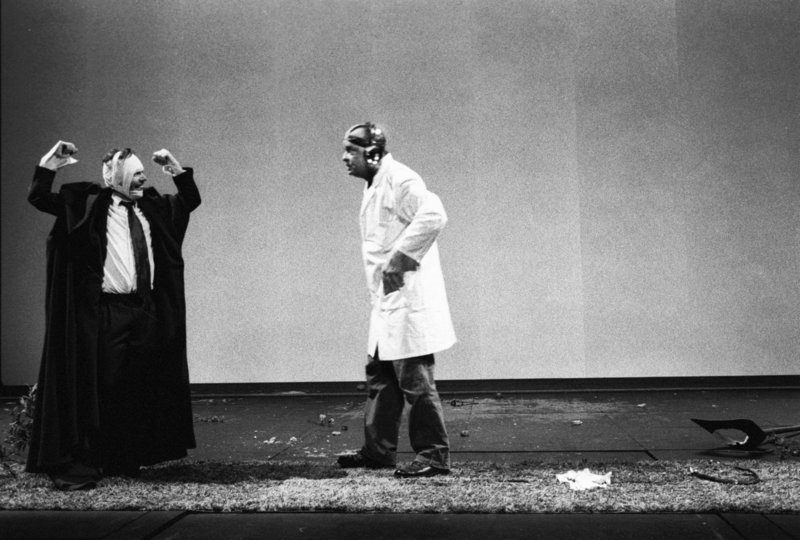
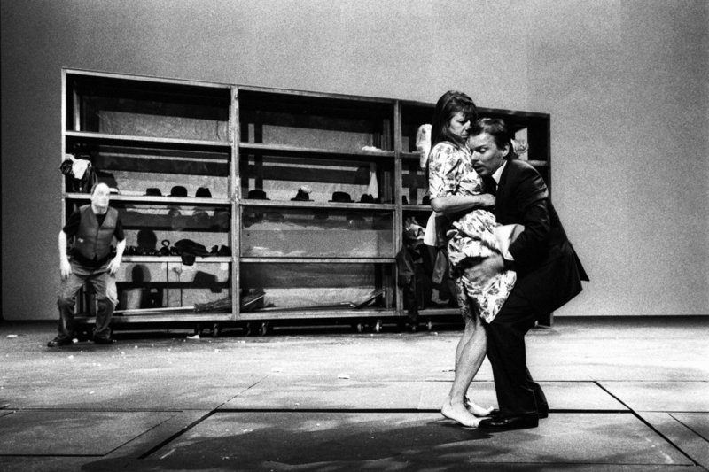
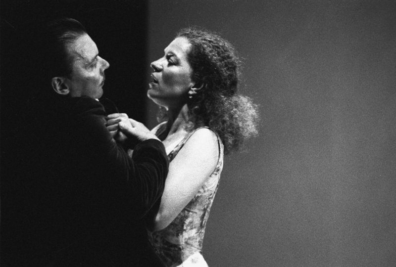
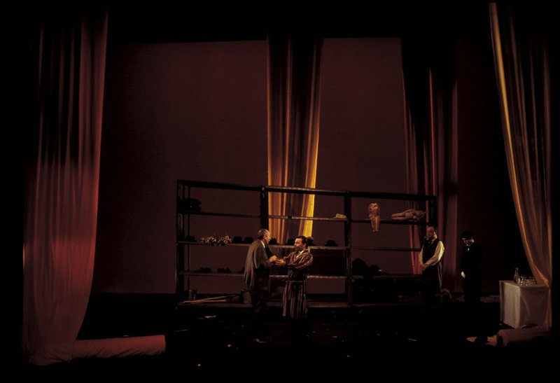

Cristian Taraborrelli designed the set and costumes for Le Festin de pierre, Molière’s Dom Juan, directed by Giorgio Barberio Corsetti at the Théâtre National de Strasbourg.
A radical scenic vision that merges metal scaffolding, video projections by Fabio Massimo Iaquone, marionettes by Antonin Bouvret, and a monumental revolving wheel in which the performers defy gravity — becoming themselves mechanisms, elements assimilated into the architecture sustained by a subtle and perfect balance.
Cristian Taraborrelli firma le scene e i costumi per Le Festin de pierre, il Dom Juan di Molière, con la regia di Giorgio Barberio Corsetti al Théâtre National de Strasbourg.
Una visione scenica radicale che fonde scaffalature metalliche, proiezioni video di Fabio Massimo Iaquone, marionette di Antonin Bouvret e una monumentale ruota girevole nella quale gli interpreti sfidano la gravità — diventando essi stessi meccanismi, elementi assimilati all’architettura, sorretti da un equilibrio sottile e perfetto.
Cristian Taraborrelli signe les décors et les costumes du Festin de pierre, le Dom Juan de Molière, mis en scène par Giorgio Barberio Corsetti au Théâtre National de Strasbourg.
Une vision scénique radicale qui mêle étagères métalliques, projections vidéo de Fabio Massimo Iaquone, marionnettes d’Antonin Bouvret et une monumentale roue tournante dans laquelle les interprètes défient la gravité — devenant eux-mêmes des mécanismes, des éléments assimilés à l’architecture, soutenus par un équilibre subtil et parfait.
La Visione
Unusable objects fill Dom Juan’s shelves, symbols of his inability to grasp, to seize. Things can only be devoured, for that is the only way to make them disappear. Women in particular are devoured, and each amorous conquest is one woman fewer in the great reserve of the world’s provisions that must be consumed to the very end by the great angelic, bulimic and dark Dom Juan.
The world sometimes becomes a wheel closed upon itself — making the small caged animals pedal — or else a strip of lawn with two chairs. The Statue of the Commander is the supreme challenge, the ultimate doubt: what lies beyond death?
Oggetti inutilizzabili riempiono gli scaffali della camera di Dom Juan, simboli della sua incapacità di prendere, di afferrare. Le cose possono solo essere divorate, perché è l’unico modo di farle scomparire. Le donne in particolare vengono divorate, e ogni conquista amorosa è una donna in meno nella grande riserva di viveri del mondo che deve essere consumata fino in fondo dal grande Dom Juan angelico, bulimico e cupo.
Il mondo diventa a volte una ruota chiusa su se stessa — che fa pedalare i piccoli animali in gabbia — o ancora una striscia di prato con due sedie. La statua del Commendatore è la sfida suprema, l’estremo dubbio: cosa c’è dopo la morte?
Des objets inutilisables remplissent les étagères de la chambre de Dom Juan, symboles de son incapacité à prendre, à saisir. Les choses peuvent seulement être dévorées, car c’est le seul moyen de les faire disparaître. Les femmes notamment sont dévorées et chaque conquête amoureuse est une femme de moins dans la grande réserve de vivres du monde qui doit être consommée jusqu’au bout par le grand Dom Juan angélique, boulimique et sombre.
Le monde devient parfois une roue fermée sur elle-même — faisant pédaler les petits animaux en cage — ou encore une bande de pelouse avec deux chaises. La statue du Commandeur est le défi suprême, l’extrême doute : qu’y a-t-il après la mort ?
— Giorgio Barberio Corsetti
Foto di Scena










Rassegna Stampa
« Des objets inutilisables remplissent les étagères de la chambre de Dom Juan, symboles de son incapacité à prendre, à saisir. Les choses peuvent seulement être dévorées, c’est le seul moyen de les faire disparaître. » « Oggetti inutilizzabili riempiono gli scaffali della camera di Dom Juan, simboli della sua incapacità di prendere, di afferrare. Le cose possono solo essere divorate, è l’unico modo di farle scomparire. » « Unusable objects fill the shelves of Dom Juan’s room, symbols of his inability to grasp, to seize. Things can only be devoured, for that is the only way to make them disappear. »
— Giorgio Barberio Corsetti, note de mise en scène
Curiosità
La produzione è stata creata il 30 maggio 2002 al TNS con gli attori della troupe permanente, sotto la direzione di Stéphane Braunschweig, e ripresa nel 2003 nella Salle Bernard-Marie Koltès. The production was created on May 30, 2002 at the TNS with the actors of the permanent troupe, under the direction of Stéphane Braunschweig, and revived in 2003 in the Salle Bernard-Marie Koltès. Le spectacle a été créé le 30 mai 2002 au TNS avec les acteurs de la troupe permanente, sous la direction de Stéphane Braunschweig, et repris en 2003 dans la Salle Bernard-Marie Koltès.
La ruota — una struttura chiusa su se stessa, come quella dei piccoli animali in gabbia — è uno degli elementi scenici più iconici della collaborazione Corsetti-Taraborrelli: al suo interno gli attori sfidano la gravità, diventando essi stessi parte dell’architettura. The wheel — a structure closed upon itself, like that of small caged animals — is one of the most iconic scenic elements of the Corsetti-Taraborrelli collaboration: inside it, the performers defy gravity, becoming themselves part of the architecture. La roue — une structure fermée sur elle-même, comme celle des petits animaux en cage — est l’un des éléments scéniques les plus emblématiques de la collaboration Corsetti-Taraborrelli : à l’intérieur, les interprètes défient la gravité, devenant eux-mêmes partie de l’architecture.
Daniel Znyk, che interpretava Sganarelle, è entrato alla Comédie-Française nel 2004. La collaborazione Corsetti-Taraborrelli include anche Il Processo di Kafka (Premio Ubu 1998) e Gertrude (Le Cri) al Théâtre de l’Odéon (Prix du Syndicat de la Critique per la migliore scenografia). Daniel Znyk, who played Sganarelle, joined the Comédie-Française in 2004. The Corsetti-Taraborrelli collaboration also includes Kafka’s The Trial (Premio Ubu 1998) and Gertrude (Le Cri) at the Théâtre de l’Odéon (Prix du Syndicat de la Critique for best set design). Daniel Znyk, qui jouait Sganarelle, est entré à la Comédie-Française en 2004. La collaboration Corsetti-Taraborrelli comprend aussi Le Procès de Kafka (Premio Ubu 1998) et Gertrude (Le Cri) au Théâtre de l’Odéon (Prix du Syndicat de la Critique pour la meilleure scénographie).
Lo spettacolo includeva un volo all’elastico, concepito e realizzato da Claude Lergenmuller / Les Élastonautes, e musica dal vivo con contrabbasso (Gianfranco Tedeschi) e violino (Caroline Stenger). The show included a bungee flight, conceived and performed by Claude Lergenmuller / Les Élastonautes, and live music with double bass (Gianfranco Tedeschi) and violin (Caroline Stenger). Le spectacle comprenait un vol à l’élastique, conçu et réalisé par Claude Lergenmuller / Les Élastonautes, et de la musique live avec contrebasse (Gianfranco Tedeschi) et violon (Caroline Stenger).
Team Creativo
Cast
Stampa e Archivi
Tags